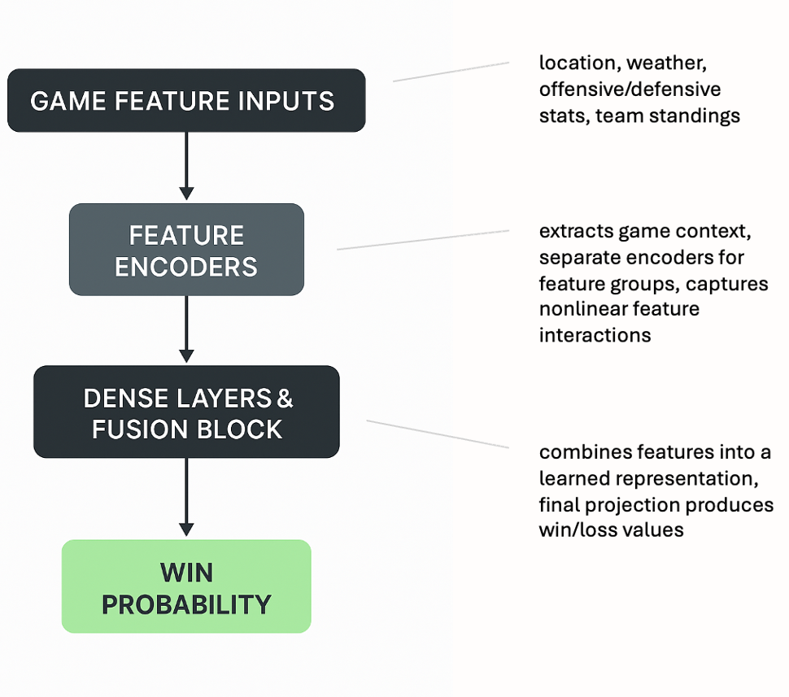
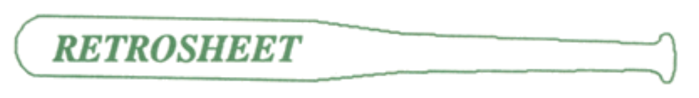

ESPN-Style Win Probability
Inspired by live broadcast win-chance indicators that update during games.
A neural model that estimates the probability a team will win at any point in a game. It’s trained on completed games and designed to produce real-time, broadcast-style indicators similar to ESPN’s on-screen meter.
Overview
A neural model that estimates the probability a team will win at any point in a game. It’s trained on completed games and designed to produce real-time, broadcast-style indicators similar to ESPN’s on-screen meter.
Data
-
Used Retrosheet, an open-source and volunteer-based organization, for all data in this project.

- Training: Full, completed games with per-game player stats current for each respective game.
- Evaluation: Mid-game or near-end snapshots using pre-game player stats to simulate live predictions.
Model & Approach
Encoders transform team and player features into compact representations. A fusion block combines context (e.g., game clock, score differential) with encoded features, followed by dense layers that output the win probability.
Results
The model produces calibrated probabilities that align closely with final outcomes in late-game scenarios. Evaluation uses log-loss and reliability curves to assess calibration and sharpness.